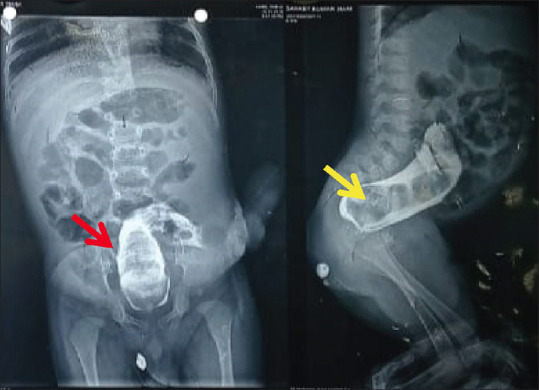
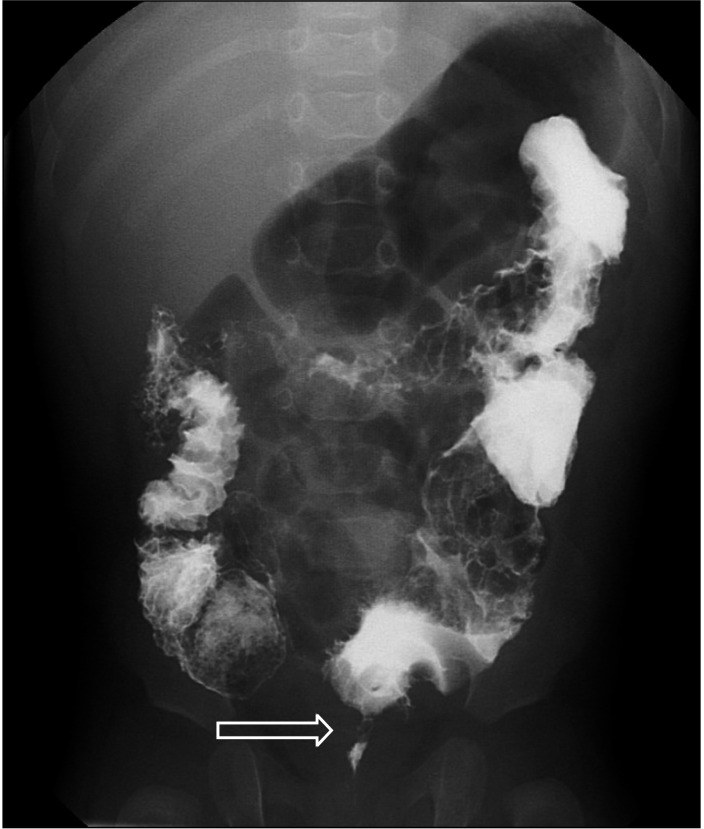
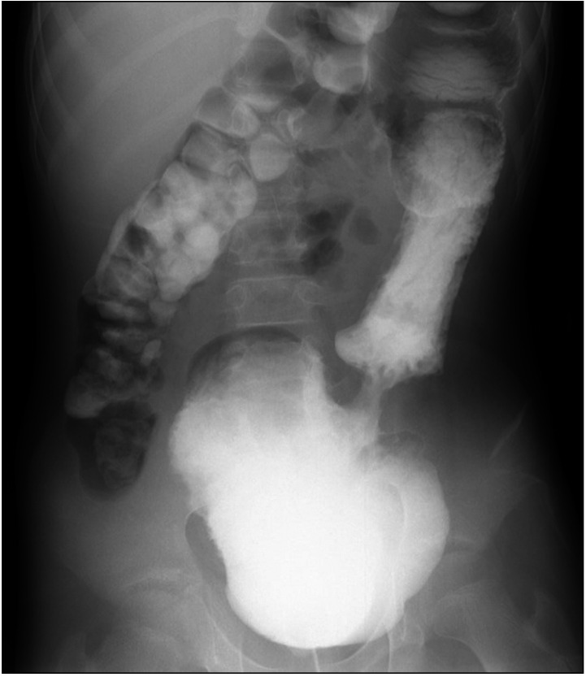
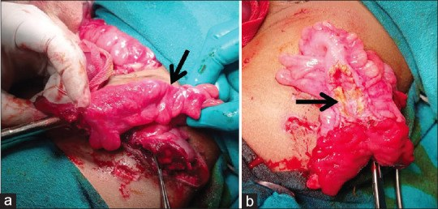

1779 — Hẹp miệng nối sau kéo trực tràng ở trẻ / Post-pull-through anastomotic stricture
Tags: pattern:hep pattern:hep-mieng-noi pattern:gian-dai-trang pattern:u-phan vung:truc-trang vung:hau-mon vung:khung-chau vung:sinh-duc-nhi protocol:chup-luu-can-quang protocol:calibration-Hegar protocol:noi-soi
Mức chắc chắn (certainty): tổng hợp y văn (literature synthesis) — số liệu lấy từ 1 đoàn hệ 2 trung tâm 91 trẻ so sánh nong định kỳ với một lần calibration (PMC13652869), 1 đoàn hệ 150 trẻ kéo trực tràng qua hậu môn một thì (PMC11430751), 2 loạt mổ lại (PMC10333807; PMC6322179), 1 đoàn hệ 98 trẻ nong hậu môn sau mổ (PMC13171265), 1 nghiên cứu định tính về gánh nặng nong hậu môn (PMC12443886), 1 loạt 37 trẻ rửa trực tràng sớm sau Swenson nội soi (PMC11605820), 1 loạt 41 trẻ ASSSARP (PMC11488181) và 1 ca hẹp đại tràng muộn sau PSARP dùng cho hình ảnh (PMC11493231). Phần nào là suy luận thực hành được ghi rõ ngay trong câu.
1. Tổng quan bệnh học – cơ chế hình ảnh
- Định nghĩa thực hành (đo được, không phải cảm tính): hẹp miệng nối là tình trạng không đưa được ống nong Hegar cỡ theo tuổi qua ống hậu môn và/hoặc sờ thấy vòng xơ hẹp khi thăm trực tràng (tiêu chuẩn dùng trong PMC13652869). Định nghĩa này quan trọng vì "hẹp" trên phim và "hẹp" trên lâm sàng không luôn trùng nhau.
- Tần suất: y văn 3–35% sau mổ Hirschsprung; đoàn hệ 91 trẻ của Zurich–Frankfurt có 15,4% (14/91) hẹp (10,9% ở nhóm nong định kỳ so với 20% ở nhóm chỉ calibration một lần, p = 0,259) (PMC13652869). Loạt 150 trẻ kéo trực tràng qua hậu môn một thì: rò miệng nối 4%, nhiễm vết mổ 15%, viêm ruột non–đại tràng (HAEC) 26%, phải mổ lại 18% (PMC11430751).
- TẠI SAO hẹp hình thành (và vì sao nó hẹp đúng một khoanh):
- Thiếu máu tại miệng nối — bóc niêm mạc/ống cơ trực tràng làm tổn thương mạng mạch dưới niêm; thiếu máu → loét → lành bằng mô hạt → nguyên bào sợi → collagen → co rút vòng quanh chu vi. Đây là lý do hẹp thường ngắn, đối xứng, đúng mặt phẳng miệng nối, khác vùng chuyển tiếp của bệnh Hirschsprung (đoạn vô hạch dài hơn, hình nón).
- Căng miệng nối và khâu không kín → rò nhỏ → xơ hóa thứ phát.
- Cuff niêm mạc/ống cơ còn lại (kỹ thuật Soave) hoặc niêm mạc cuộn vào lòng tạo vòng cản trở.
- Viêm ruột non–đại tràng (HAEC) tái diễn làm niêm mạc phù nề, xơ hóa — hẹp và HAEC thường đi cùng (trong đoàn hệ trên, 2 trẻ có cả hẹp và nhiều đợt HAEC) (PMC13652869).
- Vì sao phim cản quang thấy hẹp: cột thuốc cản quang đột ngột nhỏ lại tại một đoạn ngắn cố định, không thay đổi theo nhu động; đại tràng phía trên giãn vì phải tạo áp lực lớn hơn để đẩy phân qua. Đoạn xơ không giãn khi bơm căng, trong khi co thắt cơ thắt sẽ mở ra khi thư giãn/gây mê — đây là chốt phân biệt trên bàn chụp.
- Thời điểm: hẹp có thể xuất hiện rất muộn — trong đoàn hệ trên, chẩn đoán rơi vào ngày 22–356 (nhóm nong định kỳ) và ngày 13–1.623 (nhóm calibration) (PMC13652869). Vì vậy "đã qua 3 tháng không hẹp" không đồng nghĩa hết nguy cơ.
2. Mẫu hình + chẩn đoán phân biệt theo vị trí và thời điểm (Gamut)
Bốn câu hỏi tại giường khi trẻ tắc nghẽn sau kéo trực tràng:
- Thời điểm: ngay sau mổ (rò, phù nề, cuff) hay vài tháng–vài năm (xơ hẹp, còn đoạn vô hạch, túi giãn)?
- Vị trí hẹp: ngay trên đường lược (miệng nối) hay cao hơn (đoạn đại tràng kéo xuống)?
- Có vùng chuyển tiếp không? Nón hẹp dài + đại tràng giãn = nghĩ còn đoạn vô hạch, không phải hẹp xơ.
- Đáp ứng nong: nong đúng cỡ mà vẫn hẹp lại trong vài tuần = xơ thật; nong xong đỡ nhưng tái phát triệu chứng không kèm hẹp = nghĩ rối loạn vận động/achalasia cơ thắt trong.
Gamut theo cơ chế:
- Hẹp xơ miệng nối (thiếu máu/rò/cuff) — nguyên nhân cơ học hay gặp nhất.
- Còn đoạn vô hạch/vùng chuyển tiếp — "giả hẹp", do phẫu thuật cắt chưa hết; đây là lý do hàng đầu phải mổ lại trong các loạt lớn: 12/32 ca mổ lại vì bệnh tồn dư/túi trực tràng sau Duhamel, chỉ 2/32 vì hẹp hậu môn trực tràng (PMC6322179); loạt 13 ca mổ lại: 8/13 (61,5%) do chẩn đoán mô bệnh sai, 2/13 (15,4%) do hẹp (PMC10333807).
- Túi Duhamel giãn/ứ phân — miệng nối thông nhưng túi lớn giữ phân.
- Cuff Soave hẹp, niêm mạc cuộn, vách tồn dư — hẹp ngay trên đường lược, thấy rõ khi soi.
- Achalasia cơ thắt trong — không có hẹp giải phẫu; áp lực nghỉ cao trên đo đạc; đáp ứng botulinum toxin.
- HAEC — giãn ruột, thành dày, mức khí–dịch; không có vòng hẹp.
- Tắc do dính/xoắn — mức dịch nhiều, quai giãn, không liên quan cỡ ống nong.
- Ứ phân đơn thuần — đại tràng giãn nhưng ống nong qua dễ.
3. Bảng so sánh phân biệt (ma trận đối chiếu)
| Thực thể (entity) | Hình ảnh điển hình (cản quang/nội soi) | Chốt vào (rule-in) | Chốt loại (rule-out) | Gợi ý xác nhận |
|---|---|---|---|---|
| Hẹp xơ miệng nối | Đoạn hẹp ngắn, đối xứng, cố định đúng mặt phẳng miệng nối; đại tràng trên giãn; không nón dài | Không qua được Hegar theo tuổi + sờ vòng xơ + đoạn hẹp cố định khi bơm căng | Đoạn hẹp dài, hình nón, đổi theo nhu động → nghĩ vùng chuyển tiếp | Calibration dưới gây mê; chụp cản quang bên (lateral) |
| Còn đoạn vô hạch (vùng chuyển tiếp) | Nón hẹp dài rồi đại tràng giãn; vị trí cao hơn miệng nối; có thể thấy sau nhiều tháng | Sinh thiết hậu môn–trực tràng: không có tế bào hạch, calretinin âm | Hẹp ngắn đúng miệng nối, sinh thiết có hạch → loại | Sinh thiết + nhuộm AChE/calretinin; đối chiếu mô bệnh lúc mổ đầu |
| Túi Duhamel giãn | Túi lớn chứa thuốc/phân, miệng nối thông; không có vòng hẹp | Tiền sử mổ Duhamel + túi giãn + ứ phân tái diễn | Miệng nối hẹp rõ, túi xẹp → loại | Cản quang + nội soi; đo thể tích túi |
| Cuff Soave/niêm mạc cuộn | Vòng niêm mạc ngay trên đường lược; ống nong vướng nhưng qua được một phần | Thấy vòng niêm mạc/cầu nối khi soi; cắt vòng này hết triệu chứng | Không thấy vòng, Hegar qua dễ → loại | Soi hậu môn dưới gây mê |
| Achalasia cơ thắt trong | Không hẹp giải phẫu; đại tràng giãn; cản quang bình thường hoặc giãn | Áp lực nghỉ cơ thắt cao; đáp ứng botulinum toxin | Có vòng xơ cố định + không qua Hegar → loại | Đo áp lực hậu môn trực tràng; thử botulinum |
| HAEC | Giãn ruột, thành dày, mức khí–dịch, có thể có khí trong thành; không có vòng hẹp | Sốt + chướng + phân lỏng phun + hình ảnh giãn ruột | Hẹp cố định, không sốt → loại | X-quang/CT; tiêu chuẩn Delphi HAEC |
| Tắc do dính/xoán | Mức dịch nhiều, quai giãn, điểm chuyển tiếp cao; ống nong bình thường | Đau quặn + nôn + không trung tiện; ống nong qua dễ | Ống nong vướng tại miệng nối → loại | CT bụng cấp; mổ khi có dấu hiệu hoại tử |
| Ứ phân đơn thuần | Đại tràng giãn, phân rắn; ống nong qua dễ; không vòng xơ | Hegar qua dễ + tháo phân cải thiện | Không qua Hegar → loại | Calibration + điều trị táo bón |

Chụp lưu can quang tăng áp lực (distal colostogram): túi trực tràng tồn dư (mũi tên đỏ) và khối phân lớn (mũi tên vàng) — nguyên nhân "giả hẹp" rất hay gặp. Nguồn: Tạp chí Afr J Paediatr Surg 2024 (PMC11493231) Fig. 1, CC BY-NC-SA 4.0.
Cản quang ở trẻ còn đoạn vô hạch sau kéo trực tràng qua hậu môn: mũi tên chỉ vùng chuyển tiếp — đoạn hẹp dài, hình nón, khác hẹp xơ ngắn tại miệng nối. Nguồn: Tạp chí Ann Surg Treat Res 2023 (PMC10333807) Fig. 2, CC BY-NC 4.0.
Cản quang ở trẻ sau mổ Duhamel: túi Duhamel giãn lớn gây triệu chứng tắc nghẽn, dù miệng nối không hẹp. Nguồn: Tạp chí Ann Surg Treat Res 2023 (PMC10333807) Fig. 1, CC BY-NC 4.0.
(a) Đại tràng sigma hẹp đột ngột (mũi tên đen); (b) niêm mạc xơ trắng — bằng chứng xơ hóa thật, không phải co thắt. Nguồn: Tạp chí Afr J Paediatr Surg 2024 (PMC11493231) Fig. 2, CC BY-NC-SA 4.0.4. Protocol chụp – calibration – nong và thuật toán xử trí
- Bước 1 — calibration lần đầu (POD 8–10): dùng Hegar cỡ theo tuổi (bảng Peña), tốt nhất dưới giảm đau/an thần nhẹ. Ghi lại cỡ ống lớn nhất qua được. Đây là mốc để phân biệt "hẹp" với "ống hậu môn bình thường chật".
- Bước 2 — bằng chứng về nong định kỳ: nong định kỳ không giảm tỉ lệ hẹp có ý nghĩa (10,9% vs 20%, p = 0,259); một lần calibration không thua kém (khác biệt 9,1%; CI một phía 95% 0,0018–0,0861, dưới biên không thua kém 10%); NNT = 11 — phải nong 11 trẻ mới tránh được 1 ca hẹp (PMC13652869). Vì vậy nhiều trung tâm chuyển sang calibration một lần rồi chỉ nong khi có hẹp, thay vì nong dự phòng 8 tháng theo phác đồ Peña cổ điển.
- Bước 3 — khi đã xác định hẹp: nong chuỗi (hằng ngày do bố mẹ hoặc hằng tuần do phẫu thuật viên), tăng cỡ dần; trong đoàn hệ trên, tất cả trẻ hẹp đều xử lý được bằng nong, không ca nào phải mổ lại (PMC13652869). Nong có thể cần gây mê ở trẻ nhỏ.
- Bước 4 — chụp cản quang khi: trẻ tắc nghẽn kéo dài, nong không đỡ, nghi còn đoạn vô hạch/túi giãn/rò. Kỹ thuật: thuốc cản quang tan trong nước, không dùng bóng, chụp bên (lateral), bơm đủ căng nhưng không quá tay; đo đường kính nhỏ nhất và mô tả độ dài đoạn hẹp (ngắn < 1 cm vs nón dài).
- Bước 5 — khi nghi "giả hẹp": sinh thiết trực tràng (calretinin/AChE) trước khi nong lặp lại; đo áp lực hậu môn trực tràng nếu không có hẹp giải phẫu; soi tìm cuff/niêm mạc cuộn.
- Bước 6 — chỉ định mổ lại (redo): hẹp không đáp ứng nong ≥ 3 tháng, hẹp tái phát nhanh sau mỗi lần nong, hẹp kèm rò hoặc hẹp gần như hoàn toàn, hoặc có nguyên nhân giải phẫu khác (đoạn vô hạch, túi Duhamel, cuff) — phần ngưỡng 3 tháng là suy luận thực hành, y văn chưa có RCT. Lưu ý: trong 2 loạt mổ lại, hẹp chỉ chiếm 2/13 và 2/32 chỉ định, còn lại là bệnh tồn dư/chẩn đoán sai — đừng mổ lại chỉ vì "thấy hẹp trên phim".
- ARM (dị tật hậu môn–trực tràng): nong hậu môn sau PSARP là truyền thống theo Peña, nhưng bằng chứng mơ hồ; nghiên cứu định tính PANDA (5 phụ huynh + 13 gia đình) ghi nhận đau đớn, sợ làm hại con và ảnh hưởng quan hệ gia đình, và không khuyến cáo nong thường quy (PMC12443886). Trong loạt 41 trẻ ASSSARP, hẹp hậu môn dưới lâm sàng 6/41 (14,6%), không ca nào phải mổ lại (PMC11488181).
- Chọn dụng cụ nong: ống nong cao su tự nhiên giúp đạt cỡ mục tiêu nhanh hơn (trung vị 5,6 so với 9,4 tháng; HR 9,9; đau ít hơn) và không ca nào hẹp phải mổ trong nhóm dùng dụng cụ này (PMC13171265) — nhưng đây là nghiên cứu lịch sử–đối chứng, cần thận trọng khi quy kết.
flowchart TD
A[Tre tao bon hoac u phan sau keo truc trang] --> B{Calibration bang Hegar theo tuoi}
B -->|Qua de| C{Co dau hieu giãn ruot, sot, phan long?}
C -->|Co| D[HAEC: dieu tri viem ruot, khong nong]
C -->|Khong| E[Ứ phân/táo bón: tháo phân, theo dõi]
B -->|Khong qua duoc| F[Chan doan hep: soi + chup can quang ben]
F --> G{Doan hep ngan dung mieng noi?}
G -->|Co| H[Nong chuoi tang co, theo doi 3 thang]
G -->|Khong, non dai| I[Sinh thiet: con doan vo hach?]
I -->|Co| J[Redo keo truc trang]
I -->|Khong| K{Áp luc co that cao?}
K -->|Co| L[Botulinum toxin / danh gia achalasia]
K -->|Khong| M[Tim tui Duhamel, cuff, di dinh]
H --> N{Dap ung?}
N -->|Co| O[Theo doi ngoai tru 6-12 thang]
N -->|Khong| J
M --> J
5. Biến thể bình thường và cạm bẫy
- Ống hậu môn "chật" lúc nghỉ: cơ thắt trong co bình thường làm ống nong vướng — đừng gọi hẹp nếu ống vẫn qua được khi thư giãn/gây mê. Đây là lỗi hay gặp nhất khi calibration tại giường.
- Bơm quá ít hoặc quá căng: bơm ít → đoạn hẹp giả; bơm căng quá → miệng nối xé, đau, co thắt. Luôn chụp bên và bơm đến khi cột thuốc vừa căng.
- Vùng chuyển tiếp giả dạng hẹp: đoạn vô hạch tồn dư cho hình nón dài; nếu chỉ nong mà không sinh thiết, trẻ sẽ "hẹp tái phát" mãi. Trong loạt mổ lại, 61,5% do chẩn đoán mô bệnh sai (PMC10333807).
- Hẹp xuất hiện muộn: đã ghi nhận ca hẹp 1.623 ngày (4 năm) sau mổ (PMC13652869) — trẻ tắc nghẽn nhiều năm sau kéo trực tràng vẫn phải nghĩ hẹp.
- Satisfaction of search: hẹp và HAEC có thể cùng tồn tại (2 ca trong đoàn hệ); thấy hẹp rồi dừng lại sẽ bỏ sót viêm ruột đang tiến triển.
- Nong là thủ thuật có nguy cơ: chảy máu, rách miệng nối, nhiễm khuẩn huyết thoáng qua. Trong loạt 37 trẻ Swenson nội soi, rửa trực tràng sớm (trung vị 46 giờ) không làm tăng rò miệng nối (9,1% vs 7,7%, p = 0,887) nhưng đây là rửa, không phải nong bằng ống cứng (PMC11605820).
- Nong dự phòng không phải "vô hại": ngoài chi phí, nong hằng ngày gây đau và sang chấn tâm lý cho cả trẻ và bố mẹ (PMC12443886) — cân nhắc trước khi áp dụng cho mọi trẻ.
6. Tự lượng giá — Blind Quiz
Ca 1 — Bé trai 3 tuổi, mổ Duhamel vì Hirschsprung 2 năm trước, nay bụng chướng, ứ phân tái diễn dù vẫn đi cầu.
- Câu hỏi: Hình ảnh chính? Vì sao trẻ vẫn đi cầu được mà vẫn tắc? Có phải hẹp miệng nối không?
Bấm để hiện đáp án (findings + chẩn đoán)
- Findings: túi Duhamel giãn rất lớn, chứa đầy thuốc/phân; miệng nối thông, không có vòng hẹp.
- Chẩn đoán: túi Duhamel giãn/ứ phân — trực tràng thật nối với túi, phân ứ trong túi; trẻ vẫn đi được một phần nên không tắc hoàn toàn.
- Không phải hẹp miệng nối: ống nong qua dễ, không thấy đoạn hẹp cố định. Xử trí: tháo phân, cân nhắc thu nhỏ/cắt túi nếu tái diễn.
- Nguồn ảnh: Ann Surg Treat Res 2023 (PMC10333807) Fig. 1, CC BY-NC 4.0.
Ca 2 — Bé gái 2 tuổi, kéo trực tràng qua hậu môn lúc 3 tháng, nay táo bón nặng, bụng chướng. Cản quang bên thấy đoạn hẹp dài hình nón.
- Câu hỏi: Đoạn hẹp này là hẹp xơ hay còn đoạn vô hạch? Dấu hiệu nào phân biệt? Bước tiếp theo?
Bấm để hiện đáp án
- Findings: đoạn hẹp dài, hình nón, chuyển tiếp từ đại tràng giãn sang đoạn nhỏ — mũi tên chỉ vùng chuyển tiếp.
- Chẩn đoán: còn đoạn vô hạch sau kéo trực tràng (bệnh tồn dư), không phải hẹp xơ ngắn tại miệng nối.
- Phân biệt: hẹp xơ ngắn, đối xứng, đúng mặt phẳng miệng nối; vùng chuyển tiếp dài, hình nón, nằm trên miệng nối.
- Bước tiếp theo: sinh thiết trực tràng (calretinin/AChE); nếu còn vô hạch → mổ lại (redo), không nong đơn thuần.
- Nguồn ảnh: Ann Surg Treat Res 2023 (PMC10333807) Fig. 2, CC BY-NC 4.0.
Ca 3 — Bé gái 4 tuổi, PSARP vì dị tật hậu môn–trực tràng 2 năm trước, nay phân dẹt, phải rặn nhiều. Khám: ống hậu môn chật, không qua ống nong cỡ tuổi.
- Câu hỏi: Chẩn đoán? Vì sao phải soi/đo trước khi nong? Khi nào cần mổ lại?
Bấm để hiện đáp án
- Findings: (a) đại tràng hẹp đột ngột tại vùng miệng nối; (b) niêm mạc xơ trắng — xơ hóa thật.
- Chẩn đoán: hẹp miệng nối sau PSARP (hẹp xơ), phù hợp phân dẹt + không qua ống nong theo tuổi.
- Vì sao soi/đo: phân biệt hẹp xơ với co thắt cơ thắt (sẽ mở khi gây mê) và với cuff/niêm mạc cuộn; đồng thời xác định độ dài đoạn hẹp để chọn nong hay mổ.
- Mổ lại khi: hẹp không đáp ứng nong ≥ 3 tháng, tái hẹp nhanh, hẹp gần hoàn toàn hoặc kèm rò — ngưỡng thực hành, chưa có RCT.
- Nguồn ảnh: Afr J Paediatr Surg 2024 (PMC11493231) Fig. 2, CC BY-NC-SA 4.0.
Bài liên quan chéo
- 622 – Tắc ruột sơ sinh: double-bubble, microcolon, Hirschsprung
- 3075 – Dị tật hậu môn–trực tràng ở sơ sinh
- 1734 – Rò trực tràng–âm đạo ở trẻ em
- 546 – Loạn vận động tống phân (anismus)
- 555 – Táo bón chậm vận chuyển & loạn cảm trực tràng
Ảnh
- 4 ảnh tải từ kho toàn văn mở PMC, giấy phép ghi từng file trong
images/CREDITS.md; ảnh CC BY-NC-SA giữ nguyên bản, không cắt/ghép.
Không dùng để chẩn đoán độc lập khi chưa có người hướng dẫn.